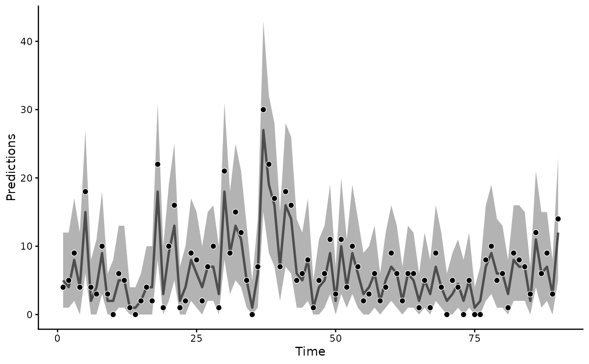
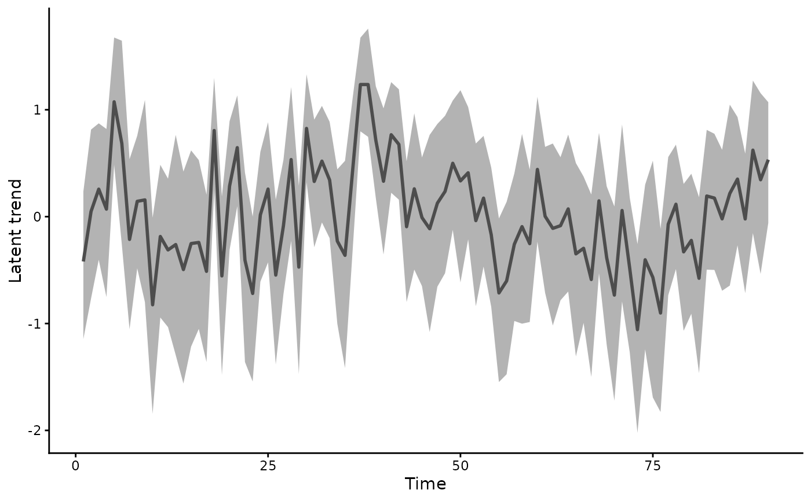
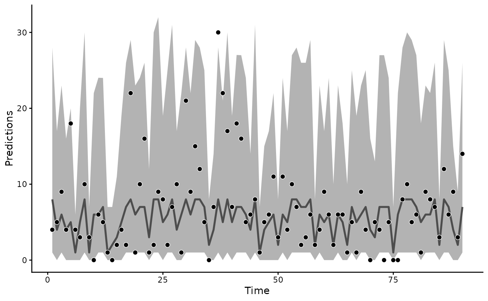
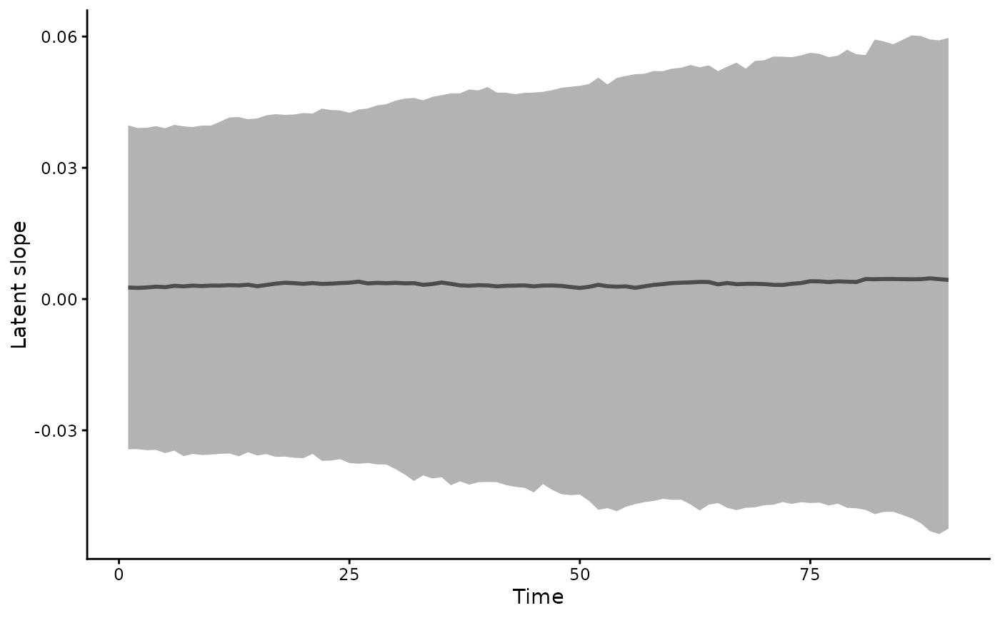

Posterior hindcasts for an mvgam state-space model
Source:R/hindcast.mvgam.R, R/mvgam_latent_state.R
hindcast.mvgam.RdPosterior draws at the training time points. Each draw takes the
latent state the model inferred at each time. The observation
family maps it to the response scale. A hindcast shows how closely
the fitted states track the data. forecast.mvgam() predicts
unseen times.
Usage
hindcast(object, ...)
# S3 method for class 'mvgam'
hindcast(
object,
...,
type = c("response", "link", "expected", "trend", "latent_state"),
component = NULL,
ndraws = NULL,
draw_ids = NULL,
obs_uncertainty = TRUE,
process_error = FALSE,
resp = NULL
)
# S3 method for class 'mvgam_latent_state'
summary(object, probs = c(0.025, 0.25, 0.75, 0.975), ...)
# S3 method for class 'mvgam_latent_state'
print(x, digits = 2L, ...)
# S3 method for class 'mvgam_latent_state'
plot(x, series = NULL, ...)Arguments
- object
A fitted mvgam object, or for
summary()anmvgam_latent_stateobject.- ...
Unused. Anything passed here is refused.
- type
The scale of the draws, as in
forecast.mvgam(), or"latent_state"for a closure-unit family."latent_state"returns the occupancy probabilitypsiof anocc()model or the abundanceNof annmix()model at each closure unit, as anmvgam_latent_stateobject. Itsprint()gives the range of the unit medians.summary()andas.data.frame()return one row per unit, with its key columns (series,timeand thesiteof a multi-season fit), the median and the 50% and 95% interval bounds.plot()draws them per series, as a line with ribbons over time or as points with interval bars over units without an order. A multi-season fit holds several sites in each season. Its plot draws the mean over those sites in each draw: the expected share of sites occupied, or the mean abundance per site.- component
NULL(the default) for the summed trend, or the names of state components of the trend, withtype = "trend". Several names give the sum of their components.LLT()has"level", the stochastic level, and"slope", its growth per time step. A seasonalLLT()adds"season"."predictor"holds the effects of the trend formula's covariates.c("level", "predictor")gives the level with those effects. A factor model projects each component through its loadings, as it projects the trend.- ndraws
Positive integer specifying number of posterior draws to use. NULL (default) uses all available draws.
- draw_ids
Optional integer vector selecting a subset of posterior draw indices to use. NULL (default) uses all draws (subject to
ndraws).- obs_uncertainty
Logical,
TRUEby default.FALSEreturns the family's mean undertype = "response", in place of a sampled observation.- process_error
Logical.
FALSE(the default) takes the fitted latent state of each draw.type = "response"then adds the observation noise alone.TRUEreplaces the fitted states with the covariate part plus newly drawn innovations, asposterior_epred.mvgam()gives with the same argument. The hindcast then shows what the model predicts without the observed history. Acomponentis a fitted state and needsFALSE.- resp
Character specifying which response variable for multivariate models. NULL (default) returns predictions for all responses.
- probs
For
summary(), the four interval bounds, lowest first. Defaults toc(0.025, 0.25, 0.75, 0.975), the 50% and 95% intervals.- x
An
mvgam_latent_stateobject.- digits
Integer number of digits in the printed range. Defaults to 2.
- series
Names or indices of the series to plot, or
NULLfor every series.
Value
An mvgam_forecast-class object. Its hindcasts are a
named list of [ndraws, n_times] matrices, one per series. Its
forecast slots are NULL.
See also
forecast.mvgam() extrapolates the fitted state.
posterior_predict.mvgam() and posterior_epred.mvgam() predict
from the covariate part of the model. The
multivariate article compares
type = "trend" hindcasts of one latent state from a joint model
and from each data source alone. The
N-mixture article summarises
type = "latent_state" hindcasts of abundance.
Other predictions:
conditional_effects.mvgam(),
conditional_smooths.mvgam(),
fitted.mvgam(),
posterior_epred.mvgam(),
posterior_linpred.mvgam(),
posterior_predict.mvgam(),
posterior_smooths.mvgam(),
predict.mvgam(),
predictive_error.mvgam(),
predictive_interval.mvgam()
Other forecasting:
compare_scores(),
ensemble.mvgam_forecast(),
forecast.mvgam(),
forecast_uncertainty(),
lfo_cv.mvgam(),
score()
Examples
# \dontrun{
set.seed(11)
simdat <- sim_mvgam(family = poisson(), n_series = 1L,
n_timepoints = 120L, trend_model = AR())
mod <- mvgam(
y ~ s(x, k = 5),
trend_formula = ~ AR(p = 1),
data = simdat$data_train,
family = poisson(),
chains = 2, silent = 2
)
#> Warning: 17 of 2000 (1.0%) transitions ended with a divergence.
#> See https://mc-stan.org/misc/warnings for details.
# The fitted states track the training counts
hc <- hindcast(mod)
plot(hc)

# The AR(1) trend on the log scale
plot(hindcast(mod, type = "trend"))

# Fresh innovations in place of the fitted states give the wider
# spread a model without the observed history would predict
plot(hindcast(mod, process_error = TRUE))

# A local linear trend's slope, the level's growth per step
mod_llt <- update(mod, trend_formula = ~ LLT())
plot(hindcast(mod_llt, type = "trend", component = "slope"))

# Next, forecast the held-out times with forecast()
# }